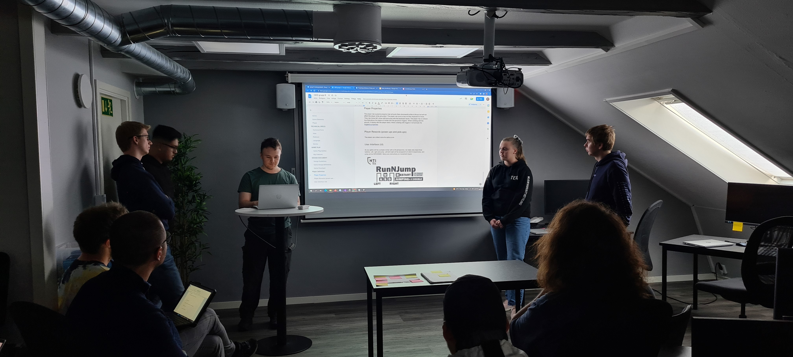
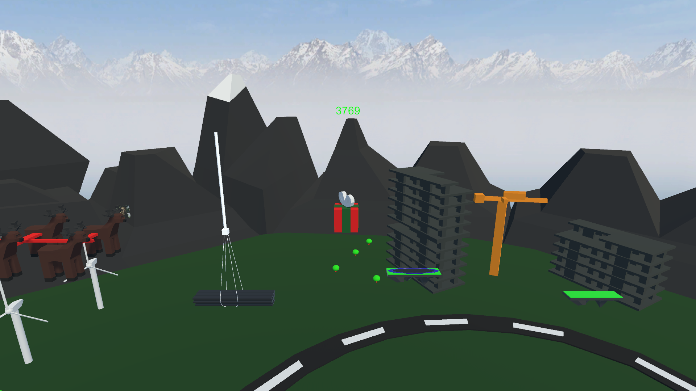

Run N Jump
Projektbeskrivning
I detta projektet skulle vi skapa ett spel i Unity från ett specifikt tema. Temat var “Running out of space” och vi fick tolka det hur vi ville när vi kom fram till en idé. Vi skulle utöver detta skapa ett Game Design Document (GDD) för hur vårt spel fungerade. Målet med spelet var att under det årliga jullanet på NTI Gymnasiet ha ett speltest där eleverna på skolan fick testa spelen.
Projektet
Vårt spel är ett singelplayer platformer spel där man är en karaktär som hoppar på olika plattformar med olika egenskaper. Desto längre man kommer desto mindre blir plattformarna och desto svårare blir det. Under tiden man spelar har man en annan karaktär som jagar dig och om denna karaktären kommer för nära dig dör du.
Presentation

